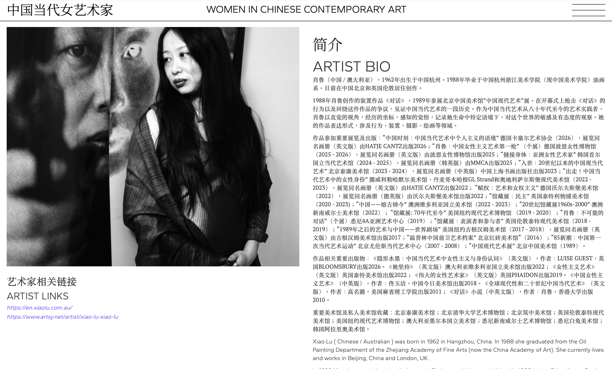
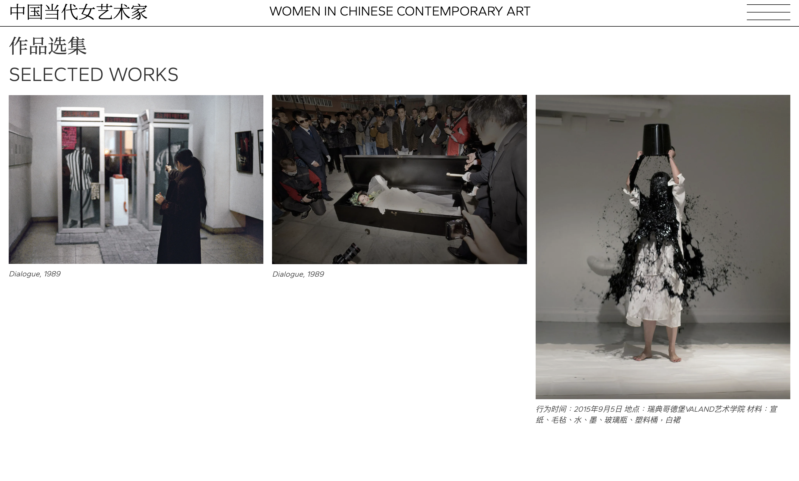

audrey yip
Web design, Webflow CMS
A website collecting the artworks of different Chinese women in the contemporary art scene that have been overlooked in mainstream media. The project was created with Webflow CMS with embeded code.
Created under Clinton Van Anarm.

